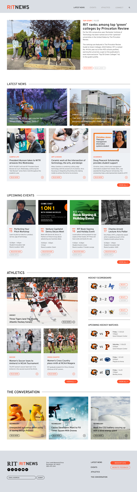
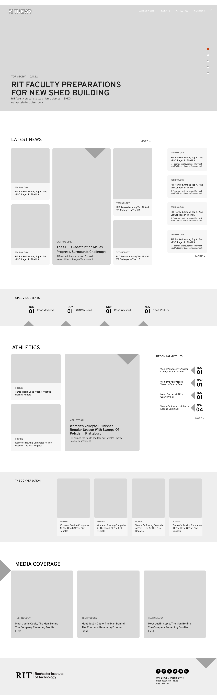
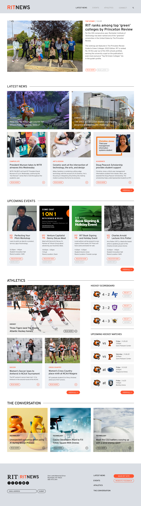
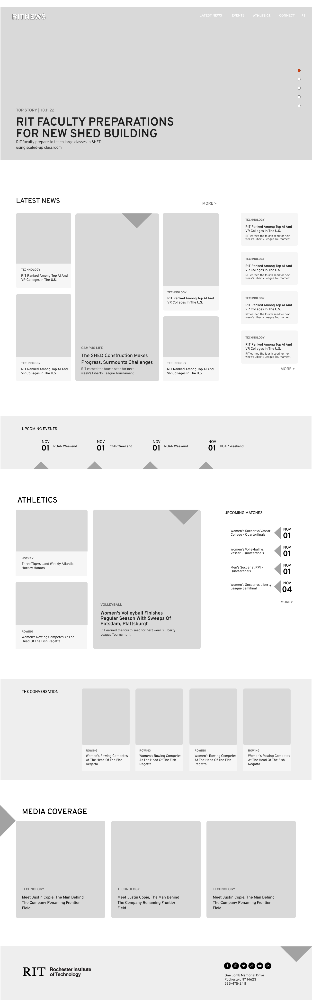

I redesigned the RIT Univeristy News page with the goal of creating a more clear interface for users to navigate. One of the biggest issues with the original website is that it doesn't have a clear navigation system and is isn't clearly organized. I created clear sections and worked on creating a consistent visual look for the site. I did several wireframes of the website - I included one of them here.
USER INTERFACE DESIGN
University News Reskin
 


